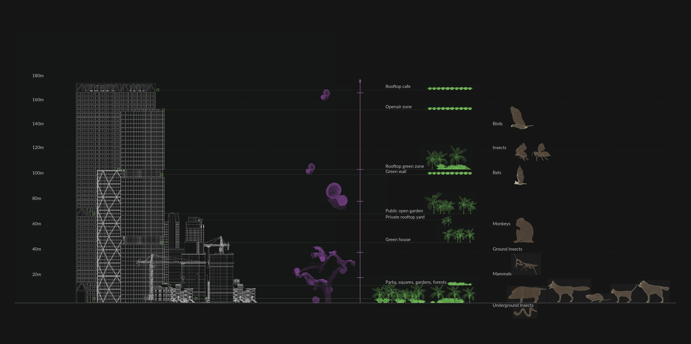

The project proposes a vertical infrastructure as a part of a green corridor that provides shelter for native animals and deals with the issue of fragmented urban forest by reconnecting it through cross-pollination. The benefits of introducing the Biomorphic Jungle are the promotion of non-polluting mobility, physical activity, and mental relaxation for citizens deprived of nature in their everyday life in order to increase their time spent in nature to at least 30 minutes daily. The main design character of such infrastructure is vertical porous tissue defined by size, density, and light transmission that serves as a natural habitat for the animals and at the same time creates a semi-transparent effect for public engagement. The project gives an opportunity for humans to interact with nature through the pockets which keep wildlife within separate layers from the public. The porosity is achieved by weaving natural fibre cellulose onto timber structures of different sizes and shapes. Prestressed fibres are solidified using bio-resin. The density of the weave and solidity of the fibres depends on two main factors: structure - vertical location of the unit, and purpose - human use, non-human, or merged. If I weave varying amount of layers and their density I produce compartments of different depth and transparency - sponge-like nature of porosity. The layers, colour, and density of sponge-like porosity form spatial moments depending on the enclosed to open criteria, light to dark, and internal climatic criteria for animals to hide and nest within the boundary of interior and exterior. While the visitors actively participate in the maintenance of the natural habitat for animals in the spaces formed inside the clusters of porous compartments. Reference to the use of weave and colour is drawn from Hand-knitted Playgrounds by Toshiko Horiuchi, where her main challenge was to create a flexible environment for people. However, Urban Jungle thrives to bring this challenge further and explore it in various scales for both people and animals. The life of citizens would get better in terms of their mental well-being because of close interaction with “urban wild” - the term used to identify the intention of my project to turn “urban nature” into. The network of corridors would expand with time in between green areas of Singapore, wrapping around the existing urban fabrics. In the long term, the infrastructure would help increase resilience of urban forest and bring back native species to the area.
LV 2023